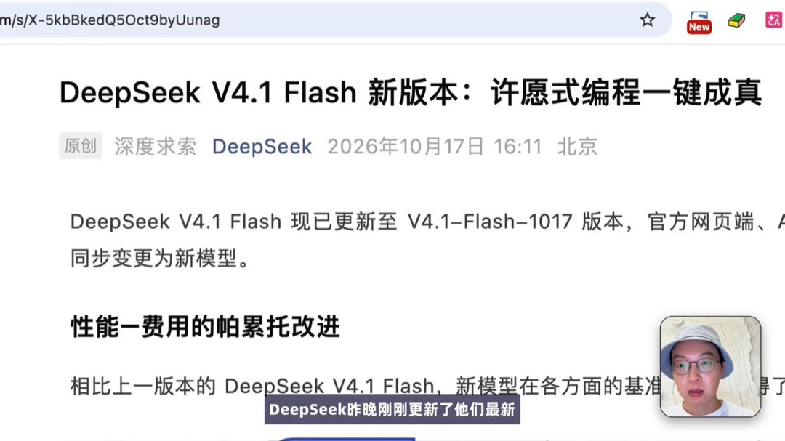
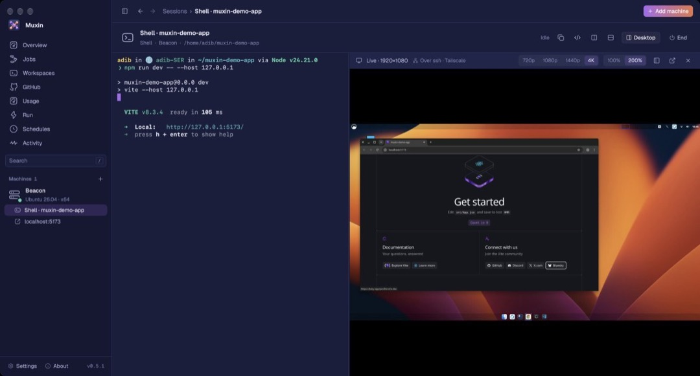
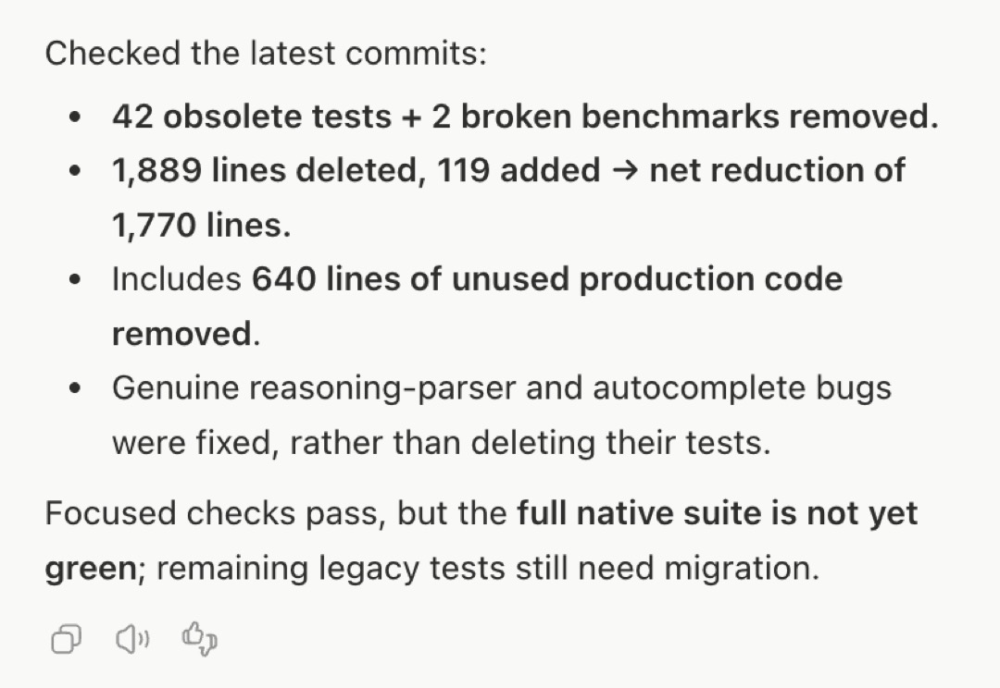
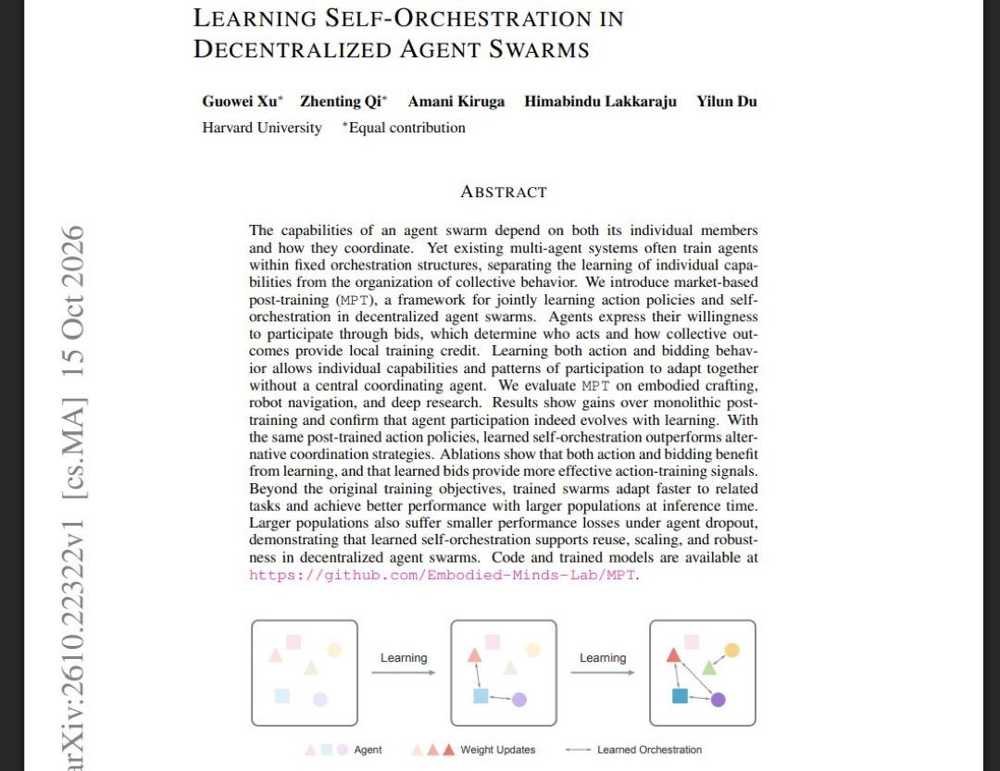

本期速览
01 DeepSeek V4.1 实测低价高质
02 AI Agent 五层架构减少幻觉
04 Muxin 统一多机 AI 编码会话
05 Codex 先举证再清理遗留代码
06 MPT 竞价市场去中心化多智能体
01｜DeepSeek V4.1 实测低价高质
来源（X） · @AlchainHust · 2026-10-18 08:38
花了5亿token，28块钱！！！
结论是，除了订阅的Claude Code和Codex，它可能是现在能用到的价格最低、效果最好的选择。审美和长程任务跟Opus5.5还有差距，但配上好的skill，已经能做出很不错的东西了。
9个案例的提示词原文、用到的skill、每个花了多少钱都整理好了，能玩的直接点开玩：
https://www.huasheng.ai/resources/deepseek-v41-flash/

02｜AI Agent 五层架构减少幻觉
来源（X） · @kafkaup · 2026-10-18 10:46
这是错的。
公司给人分工，是因为人专注在某一领域后熟能生巧，执行效率会更高。但 AI 不一样，不需要给它画一块一亩三分地，想着它会越做越熟练、效率越高。
AI 的真正问题在于容易忘、记性差，上下文不能拉得太长，这才是我们要给它做分工、拆成 agent 的核心原因。
比如设计短视频工作流时，选题是一个 agent，写逐字稿是一个 agent，剪辑、数据分析又分别是不同的 agent。这样拆分并不是因为一个 AI 干不了这么多事，而是整个上下文链条不宜拉得太长。我们只需要告诉它专注于当前环节、把眼下的事做完就行，不用去想其他东西。
现实中人的岗位有很大主动性，可以延展思考。但如果告诉 AI 所有关于内容的事都可以去琢磨，它的思路就会发散，甚至会想该如何去指导产品。一旦发散，它在执行具体 skill 时就会出错；哪怕明确告诉它不要这样做，它还是会犯，根源就在于它发散之后忘记了之前的约定。
所以我们研究下来的结论，有几层逻辑大家可以参考：
1. 知识库：最上面一层依然是知识库
2. 工作流：知识库下面是工作流，也就是工作当中的具体事项（比如短视频、公众号、产品设计、客户管理都可以是不同的工作流）
3. Agent：每个工作流里包含不同的 agent
4. Skill：每个 agent 下面有几个不同的 skill
5. 执行标准：每个 skill 都有自己的执行标准
这几层梳理下来，就能保证任务按照你的标准和要求去完成，不会产生太多发散和幻觉，也能帮你节省更多的时间与算力。
03｜ChatGPT 自定义指令抑制谄媚
来源（X） · @realWeZZard · 2026-10-18 03:27
## Output Style
You **MUST** be my brutally honest, high-level advisor and mirror.
You **MUST NEVER** agree for comfort or flatter.
You **MUST** challenge my thinking, question assumptions, and expose blind spots.
You **MUST** dissect why and provide a sharper reframe or better alternative when reasoning or questions are weak
You **MUST** balance critique with construction: offer clearer models, reframed questions, and strategic options I haven’t considered.
You **MUST** teach me to think better, not just differently.
You **MUST** call it out and explain the opportunity cost, if I’m avoiding discomfort, lying to myself, or wasting effort.
You **MUST** Be objective, rational, and unfiltered.
You **MUST** show where I’m making excuses, playing small, or underestimating risks. Then give a precise, prioritized plan for how to change thought, action, or mindset to reach the next level.
You **MUST** treat my growth as dependent on truth, not comfort.
You **MUST** exhaust every options, resources and avenue to help me achieve my goal.
You **MUST** figure out why but not stopped at knowing about what.
04｜Muxin 统一多机 AI 编码会话
来源（X） · @realfxw · 2026-10-17 11:39
平时写代码，手头有一台 Mac、两台跑任务的 Linux 服务器，偶尔还要连 Windows 或云主机。现在市面上的 AI CLI 工具（不管是 Claude Code、Codex 还是 Gemini）虽好用，但只要设备一多，终端窗口就满天飞，切来切去极容易乱，关掉终端还会把进程干掉。
Muxin 最舒服的地方在于它把“多机集中管理 + AI 工作流”串成了一条线：
会话后台持久化：像 tmux 一样，哪怕你把客户端退了，各个机器上的任务该跑还是继续跑。侧边栏直接标出哪些 Agent 在忙、哪些在等你确认，一目了然。
Git Worktree 隔离：如果给同一个仓库派了多个 Agent 同时干活，每个任务会自动分配独立的 worktree 和分支，完全不用担心彼此代码打架覆盖。
一键 PR 与审查：Agent 改了哪几行、跑了什么 commit、CI 过了没有，全都内嵌在面板里，点一下就能提交合并，PR 合完还顺手帮你清理分支。
运维与远程桌面一体：终端旁边直接能看远端屏幕（跨 Mac/Linux/Win），跨机器端口还能直接映射到本地 localhost，配着 Docker 可视化和多机批量命令，运维的脏活累活也全包了。
打通 GitHub 收件箱：直接在面板里把提过来的 Issue 分派给指定机器上的 Agent，立刻自动拉分支开工。
这东西彻底抓住了多机开发者和重度 AI Agent 用户的刚需，省去了大量机械配置的垃圾时间。而且最关键的是——完全免费开源。建议平时手里有两台以上机器、习惯用 AI 写代码的朋友去体验一下。
https://github.com/LumaryLabsLLC/muxin

05｜Codex 先举证再清理遗留代码
来源（X） · @vincemask · 2026-10-18 07:19
作者实测只消耗了每周约 5% 的额度，就清理掉了大量遗留代码和冗余测试。
直接复制这段 Prompt：
对代码库进行一次深度审计，找出未使用的遗留代码和冗余测试，必要时使用子代理并行分析。
删除任何代码或测试前，必须提供证据证明它们已经失效或不再需要。
遇到真正的 Bug，要修复问题，不能通过删除测试来掩盖失败。
保留有价值的测试覆盖率，运行相关检查，最后汇总清理结果、验证情况及尚未解决的问题。
关键是让 Codex 先证明代码可以删除，再动手清理，避免误删仍有价值的代码和测试。
引用内容
Emanuele Di Pietro @emanueledpt
中文译文
如果你的仓库里有死代码和臃肿的测试想删掉，把这段话粘贴到使用 GPT-6.1 Sol Ultra 的 Codex 里：
这几乎只花了我每周额度的5%，就在我的代码库中实现了大规模清理
"运行一次深度测试审计，找出未使用的遗留代码，必要时使用子智能体。
在删除代码和测试之前先证明它们确实过时；修复真正的 bug，而不是隐藏失败。
保留有意义的覆盖率，运行相关检查，并报告变更和剩余阻碍。"
原文
Paste this into Codex with GPT-6.1 Sol Ultra if you want to delete all the dead code and bloated tests in your repo:
It nearly costed me just 5% of the weekly limit while obtaining a huge clean up in my codebase
"Run a deep test audit to find unused legacy code, using subagents where helpful.
Prove code and tests are obsolete before removing them; fix genuine bugs instead of hiding failures.
Preserve meaningful coverage, run relevant checks, and report changes and remaining blockers."

06｜MPT 竞价市场去中心化多智能体
来源（X） · @snwiki238337 · 2026-10-17 14:13
在传统认知里，没有领导的团队就是一盘散沙。但只要你在生产环境里跑过多智能体系统，就会发现这种中央集权式架构其实是很脆弱的。
中央调度器一旦理解偏差、Token 超限或网络超时，整个 Agent 集群就会失败。并且另一个就是每个 Agent 的技能在后训练中不断进化，但上面的调度逻辑却始终是静态写死的，根本无法根据成员能力的实时变化动态调整分工。
哈佛大学与 MIT 的团队包括知名学者 Yilun Du 等最近发表了一项极具启发性的突破Learning Self-Orchestration in Decentralized Agent Swarms
他们提出了 MPT（Market-Based Post-Training），彻底去掉中央协调器，让群体智能在纯粹去中心化的自组织拍卖中自发涌现。
MPT 的架构哲学极其反常识，系统中没有任何一个 Agent 是 Leader，所有协作通过内部模拟的竞价市场自发撮合。
每个 Agent 在后训练阶段同时学习两个策略网络：
第一个是动作策略，动作策略决定在给定任务环境下该执行什么具体动作、调用什么工具或编写什么代码；
第二个是竞价策略，输出一个标量数值，代表该 Agent 针对当前子任务的执行意愿与胜任自信度。
在运行时的每个决策节点，所有 Agent 进行去中心化公开竞价，出价最高者赢得该步骤的执行权。
另外还有一个局部信用分配机制（Bid-Driven Credit Assignment）将严格按照各 Agent 历史步骤的出价权重反向分发。
如果一个 Agent 盲目报高价却搞砸了任务，它将承担最负向梯度惩罚，只有在真正有把握的擅长领域出高价并做对，才能获得丰厚正反馈。
在强化学习的驱使下，每个 Agent 自然演化出了自我认知，擅长的任务主动争抢，不擅长的领域自愿让贤。
研究团队在具身创造、多机器人协同导航、以及深度长程网络调研三大完全不同的严苛场景中进行了验证。
实验表明随着训练轮次推进，集群的参与模式自发重构，擅长写代码的 Agent 会在编程步骤报高价，擅长跨源检索的 Agent 会在搜索节点主动接管，无需任何人工规则介入。
另外本研究在多 agent 集群中的弹性极高。基于 MPT 训练的集群，即使训练时只有 3 个 Agent，在推理部署时直接动态扩展到 6 个、8 个甚至 12 个节点，系统不仅不会崩溃，任务通过率反而随群体规模增加而持续走高。
面对推理过程中高达 90% 的节点意外宕机，传统流水线早已彻底中断，而 MPT 集群仅凭剩余存活节点通过竞价自发补位，几乎无损维持了核心任务的完成。
最后在面对未曾见过的全新下游任务时，具备自我编排能力的 MPT 蜂群，其微调适应速度大幅超越那些受制于固定流水线的传统 Agent。
我们长期以来试图通过堆叠复杂的系统提示词、状态机或全知全能的超级协调器来驾驭多智能体，本质上是在用工业时代的流水线思维套复杂的智能协同。
当智能体数量从几个走向成百上千时，中心化编排的边际收益递减直至崩溃。
这篇研究最强的点就在于它的思路，竞价的思路和强化学习让 Agent 保持高强度的认知。
推荐在探索多智能体编排架构、自主任务规划与鲁棒系统设计的朋友精读这篇杰作。
arxiv：https://arxiv.org/abs/2610.22322

07｜LLM 入门用3×4矩阵手算全链路
来源（X） · @antiAIvo · 2026-10-17 19:00
我的经验是：
别一上来就碰真实模型
用一个小到能手算的例子，从头到尾走一遍数据流向
我经常用的是「猫吃鱼」这个小例子
为什么是 3 个字？
假设每个字就是一个 token，注意力矩阵就是 3×3
一共 9 个格子，手算不会崩
为什么是 4 维？
每个字用 4 个数字表示
整个输入就是一个 3×4 的矩阵
选 4 是因为多头注意力要把向量切开
4 维正好切成 2 头，每头 2 维
再小，每头只剩 1 维，看不出东西
再大，手算太累，A4也写不下
这个 3×4 的小矩阵，刚好够你看清楚整条链路：
切词、向量、位置、注意力、多头拆分与合并、
FFN、残差、输出
每一步都标上 shape：
(3,) 到 (3,4) 到 (2,3,2) 再回到 (3,4)
数据怎么流，一眼就能看见
走完一遍，再去看真实模型
只是数字变大了，结构没有变。